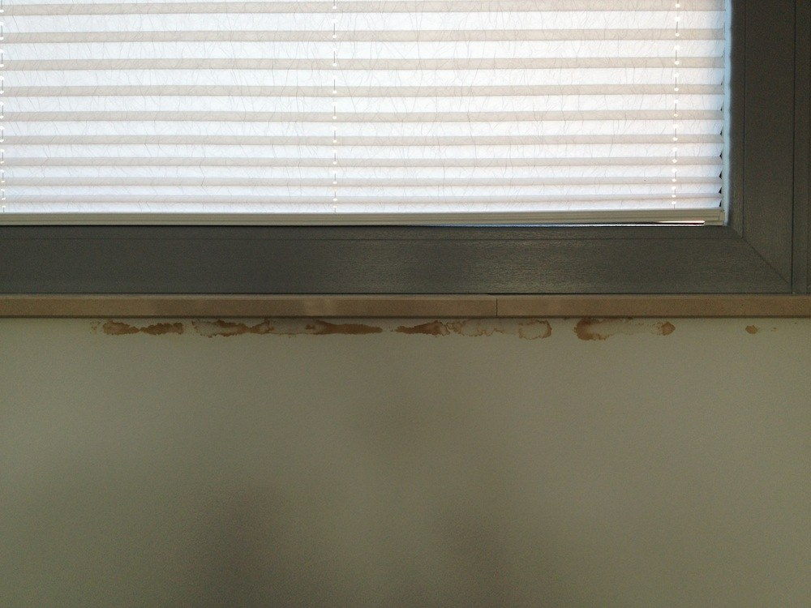
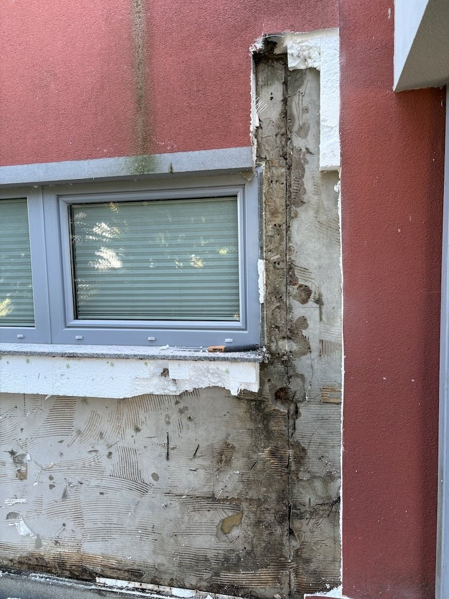
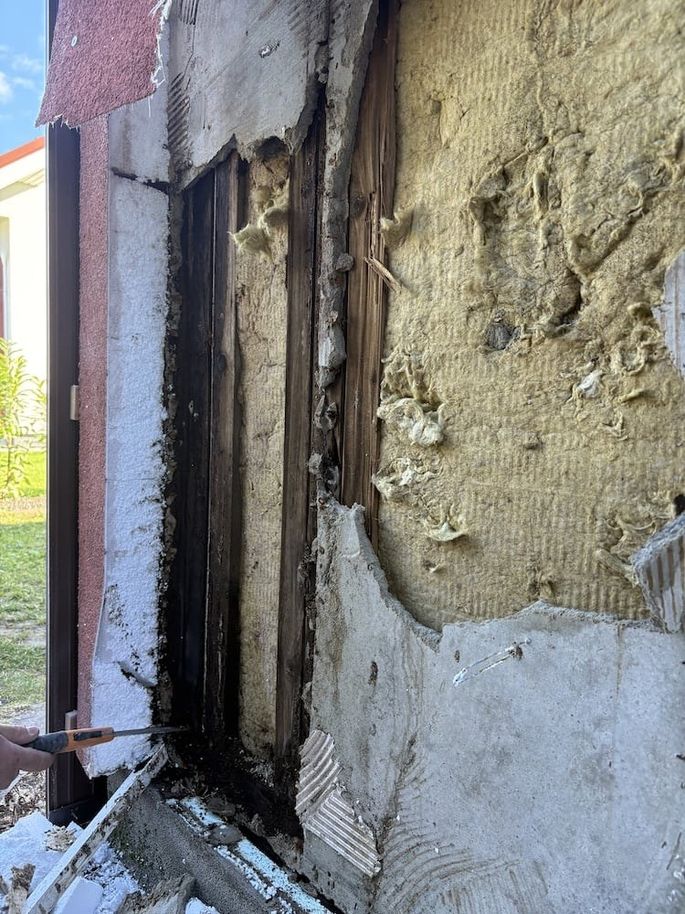
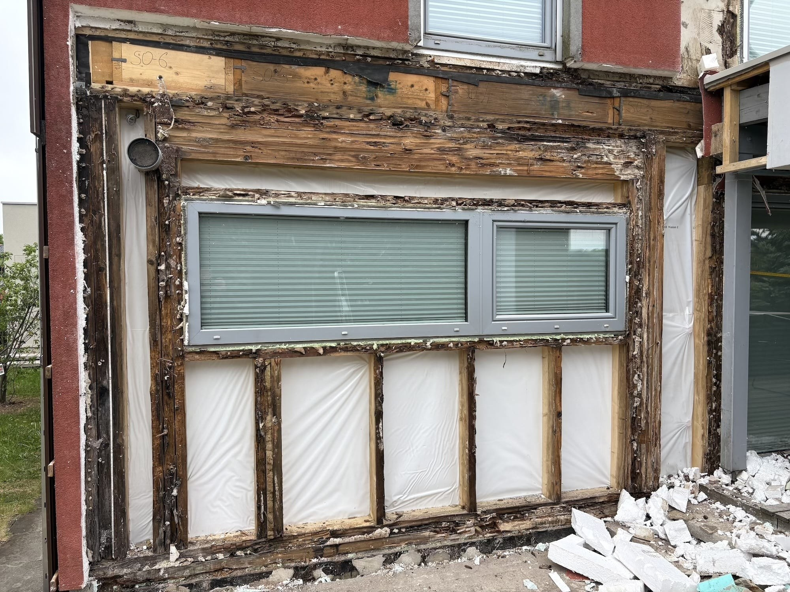
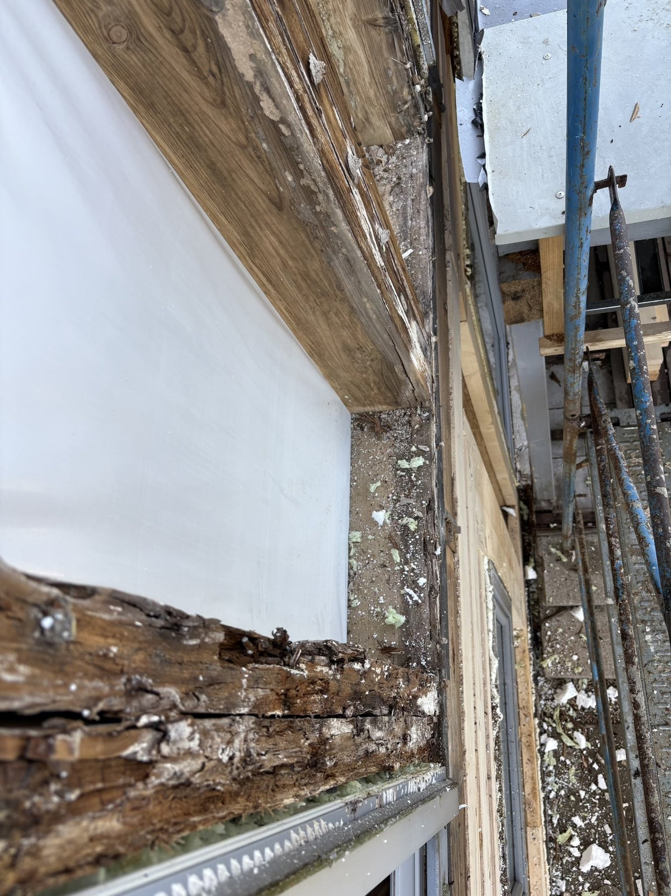
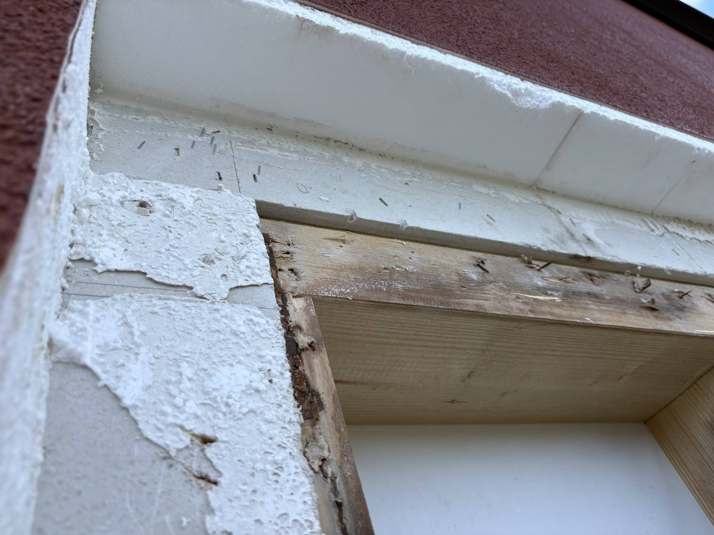
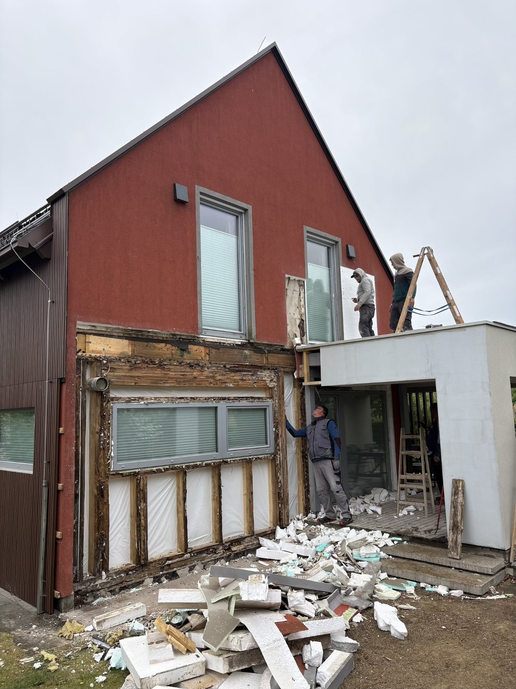
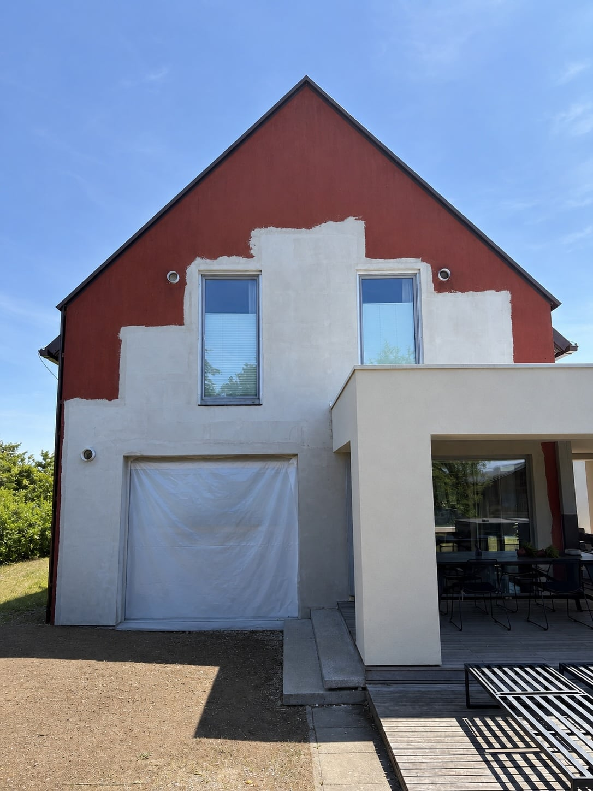
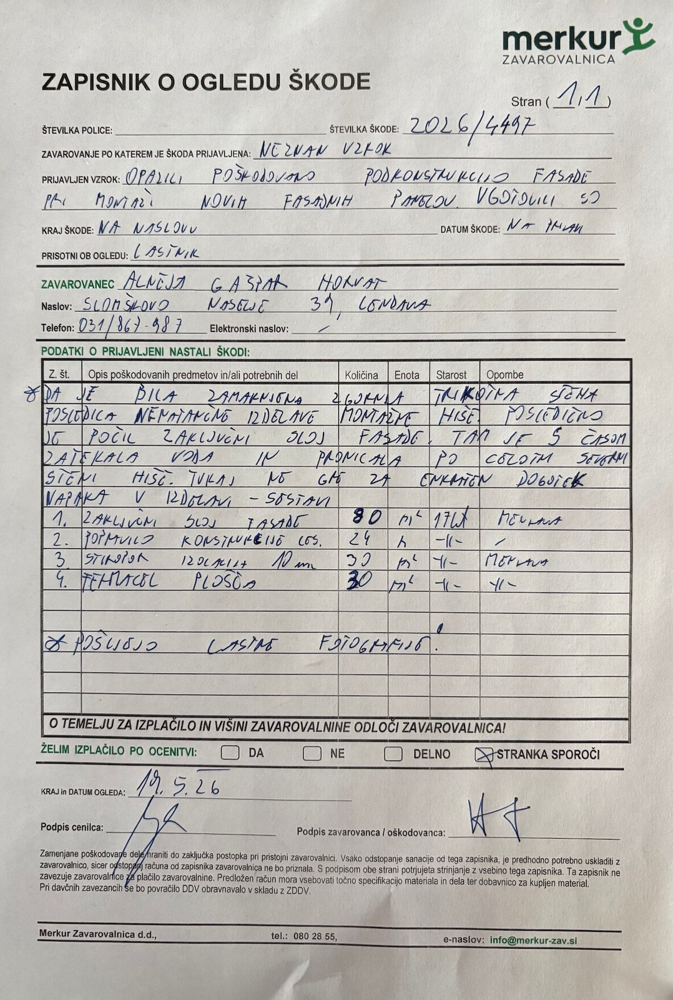
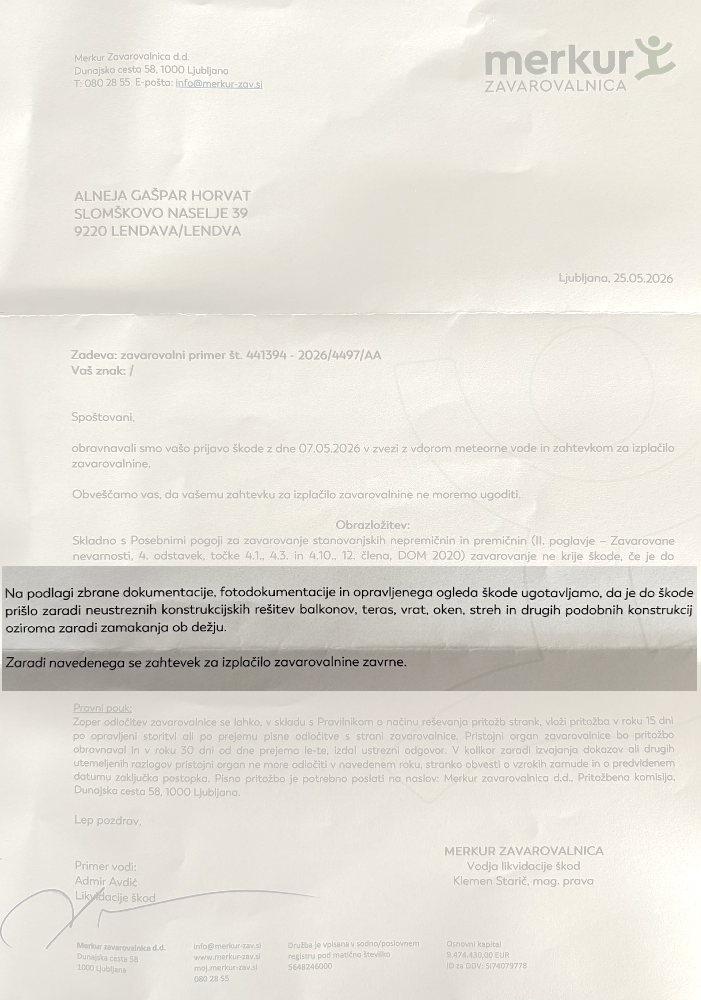

01
Povzetek
Leta 2025 smo v okviru priprave za novo prezračevano fasadno oblogo pričeli odpirati fasado, saj podkonstrukcije na določenih mestih ni bilo mogoče več ustrezno sidrati. Po odstranitvi zaključnega sloja fasade, EPS izolacije in zunanjih Fermacell plošč je bilo ugotovljeno obsežno zamakanje ter degradacija lesene konstrukcije.
Potrebna je bila obsežna sanacija, ki ni bila omejena na fasadersko popravilo, temveč je zahtevala poseg v konstrukcijo objekta.
Ključni poudarki
- Reklamacija iz leta 2012 dokazuje zgodnje znake zamakanja in težave z odpiranjem terasnih vrat.
- Pri odpiranju stene je bil ugotovljen zamik oziroma neravnina v zgornjem delu stenskega elementa.
- Na mestu neravnine je prišlo do razpoke zaključnega sloja fasade in dolgotrajnega vdora vode v konstrukcijo.
- Zavarovalnica je zahtevek zavrnila z obrazložitvijo, da gre za konstrukcijsko oziroma izvedbeno težavo.
- Po sanaciji stene terasna vrata ponovno delujejo normalno.
02
Časovnica
Izgradnja objekta
Hiša je bila zgrajena na ključ. Pogodba med Marlesom in Alnejo Gašpar št. 7504/2009.
Reklamacija
Na Marles je bila poslana reklamacija zaradi zamakanja pod oknom. Naslednji dan je bila poslana še dodatna prijava in opozorilo na težave z odpiranjem terasnih vrat.
Odprtje stene
Ob pripravi za novo fasadno oblogo in preverjanju možnosti sidranja podkonstrukcije je bila odprta fasada. Pokazala se je obsežna poškodba lesene konstrukcije.
Sanacija
Izvedena je bila konstrukcijska sanacija stene, odstranitev in ponovna vgradnja 6 oken, zapiranje stene ter fasaderska sanacija.
03
Reklamacija iz leta 2012

Dokumentiran zgodnji pojav zamakanja
Dne 6. novembra 2012 je bila na Marles poslana fotografska dokumentacija zatekanja pod oknom. Iz e-sporočila je razvidno, da je pred tem potekal tudi telefonski dogovor.
Dokumentirana težava s terasnimi vrati
V drugem sporočilu iz 7. novembra 2012 je bilo poslano dodatno opozorilo na druge težave. Med njimi so bila navedena okenska vrata na teraso, ki so kljub rednemu vzdrževanju glasno škripala in se kasneje več kot deset let niso normalno odpirala.
Po sanaciji stene vrata ponovno delujejo brez težav. Ob sanaciji je bilo ugotovljeno posedanje preklade nad tem območjem kot posledica dolgotrajnega zamakanja.
Odpri PDF reklamacije04
Fotodokumentacija sanacije







05
Ugotovitve in odločitev zavarovalnice
Cenilec zavarovalnice je opravil ogled škode. V dokumentaciji je navedeno, da je bila zamaknjena zgornja ploskev oziroma nenatančno izvedena montaža hiše.


06
Dokumentirani stroški
| Postavka | Znesek |
|---|---|
| Konstrukcijska sanacija stene po zamakanju | 8.869,50 EUR |
| Fasaderska sanacija in sanacija nadstreška | 2.748,45 EUR |
| Odvoz odpadkov | 500,00 EUR |
| Skupaj | 12.117,95 EUR |
Zaključek in predlog obravnave
Podjetju Marles se zahvaljujemo za 50-odstotni popust pri nabavi konstrukcijskega lesa v znesku 375 EUR.
Glede na dokumentirano reklamacijo iz leta 2012, dejanske ugotovitve ob odprtju stene, ugotovitve zavarovalnice in obseg potrebne sanacije prosimo, da podjetje Marles preuči možnost participacije pri preostalih stroških sanacije.